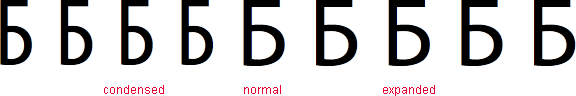

font-stretch
Устанавливает узкое, нормальное или широкое начертание шрифта, что позволяет уплотнять или расширять текст.
Краткая информация
| Значение по умолчанию | normal |
|---|---|
| Наследуется | Да |
| Применяется | Ко всем элементам |
Синтаксис
font-stretch: ultra-condensed | extra-condensed | condensed | semi-condensed |
normal | semi-expanded | expanded | extra-expanded | ultra-expandedЗначения
Влияние разных значений font-stretch на вид букв в тексте показано на рис. 1.

Рис. 1. Вид букв при разных значениях font-stretch
Пример
<!DOCTYPE html>
<html>
<head>
<meta charset="utf-8">
<title>font-stretch</title>
<style>
p {
font-size: 5em;
font-family: 'Myriad Pro';
}
</style>
</head>
<body>
<p>
<span style="font-stretch: ultra-condensed">Б</span>
<span style="font-stretch: extra-condensed">Б</span>
<span style="font-stretch: condensed">Б</span>
<span style="font-stretch: semi-condensed">Б</span>
<span style="font-stretch: normal">Б</span>
<span style="font-stretch: semi-expanded">Б</span>
<span style="font-stretch: expanded">Б</span>
<span style="font-stretch: extra-expanded">Б</span>
<span style="font-stretch: ultra-expanded">Б</span>
</p>
</body>
</html>Объектная модель
Объект.style.fontStretch
Примечание
Браузеры применяют свойство font-stretch не ко всем шрифтам, поэтому уплотнение или расширение текста может не работать с некоторыми популярными и распространёнными гарнитурами шрифтов.
Спецификация
| Спецификация | Статус |
|---|---|
| CSS Fonts Module Level 3 | Возможная рекомендация |
Браузеры
| Internet Explorer | Chrome | Opera | Safari | Firefox |
| 9 | 9 |
| Android | Firefox Mobile | Opera Mobile | Safari Mobile |
| 9 |